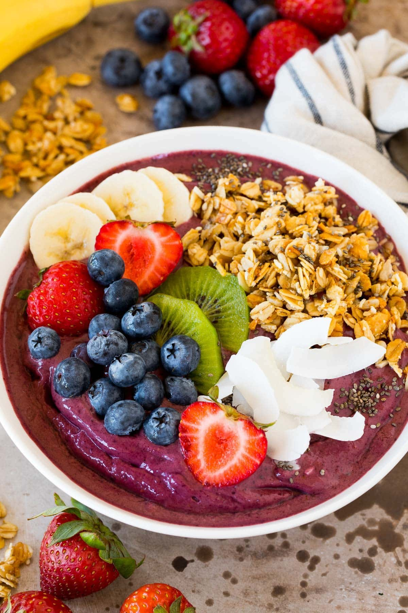

Fruit Bowl

Description
An açaí fruit bowl is a refreshing, nutrient-rich way to start the day or recharge after a workout. Made with frozen açaí purée blended with bananas and berries, it’s thick, smooth, and naturally sweet. The base is topped with granola, fresh fruits, and a drizzle of honey or nut butter for added crunch and richness.
Packed with antioxidants, fiber, and healthy fats, it’s as nourishing as it is delicious. You can customize toppings to suit your taste, from coconut flakes to chia seeds. It’s a visually appealing and energizing treat that feels indulgent but is wonderfully wholesome.
Ingredients
- 7 ounces frozen acai puree
- 1 cup sliced frozen banana
- 1 cup frozen mixed berries
- 3/4 cup coconut milk
- 1 tablespoon honey
- 1/2 cup granola
- 1 cup fresh fruit sliced
- Assorted toppings as desired
Instructions
- Break up the acai packets into pieces. Place the acai, banana, mixed berries, coconut milk and honey in a blender.
- Blend until smooth. You will need to use a tamper stick or occasionally turn the blender off and use a spoon to stir everything up.
- Spoon the acai mixture into two bowls. Top with granola, fresh fruit and other toppings as desired. Serve immediately.
Home